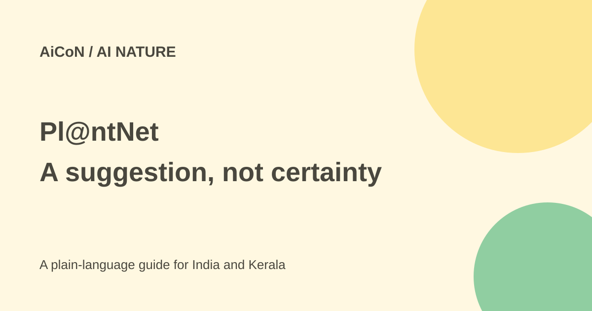

Pl@ntNet: identify plants from photos, with safety checks
Pl@ntNet suggests possible plant names from photos. Use it to learn and compare, not to decide that an unknown plant is safe to eat or use as medicine.

What is Pl@ntNet?
Pl@ntNet is a citizen-science project with a plant-identification app and website. Citizen science means members of the public contribute observations that can support research. Its identification system combines AI image analysis, botanical reference data and community review.
Its official documentation names support from French research organisations including Cirad, Inria, IRD and INRAE. This is a plant-identification service, not a general chatbot. It proposes species from the photos you provide; it cannot inspect a plant's every feature through a single image.
Is it free and do I need an account?
The basic identification service is offered on the web, Android and iOS. The checked terms say identification and consulting data do not require an account. An account is needed to contribute to the project's enrichment, such as sharing observations and reviewing them.
The web service offers identification using up to four images of one plant. Do not mix photos of different plants into the same request. A separate feature, project or paid developer service should not be assumed to have the same terms as basic public identification.
How to identify a plant
- Use the official app or web identifier.
- Take clear photos of one plant, such as its leaf, flower, fruit or other useful parts.
- Choose the photographed organ type when asked.
- Use an appropriate regional flora or theme if the app offers it.
- Review the ranked suggestions and compare their galleries with your plant.
- If the result is uncertain, take better photos or ask a knowledgeable local botanist.
- Only validate and share an observation when you understand what you are publishing.
A flora is a list of plants linked to a region or theme. Pl@ntNet can suggest one when GPS is enabled, or you can choose it yourself. For a wild plant in Kerala, regional context can reduce irrelevant suggestions. For an ornamental plant grown outside its native region, a narrow local list may exclude the right species.
Why an AI match can be wrong
Similar species can differ in features that are not visible in your photo. Poor lighting, blur, missing flowers or an underrepresented species can weaken the result. The model's confidence ranking is not a guarantee that the top name is correct.
The official model guide says community review is important. Other users can validate or correct an identification, and those contributions improve the system. A second photo or comparison can be more useful than accepting the first result immediately.
Do not use it as an edibility test
Do not eat an unknown plant, feed it to a pet, or use it as medicine because an app gives it a familiar name. A mistaken match can have serious consequences. Identification software is not poison advice or a substitute for a qualified expert in a high-risk decision.
If a person or animal has already been exposed to a potentially harmful plant and is unwell, seek medical or veterinary help rather than waiting for an app result. Keep useful photos for the professional, without taking further risks to collect the plant.
Privacy and public observations
The terms say identification queries and results can be stored, including photos, time and optional location. Contributions are public observations; they can include images, your user name and location if enabled. The terms describe a Creative Commons sharing licence for contributed data.
Review GPS and sharing settings before posting from home, a private garden or a sensitive habitat. Taking a photo, asking for identification and publishing a community observation are different steps. Crop out people and private details when they are not needed.
What changed since the original AiCoN post?
This article expands today's #AI96 post with multi-photo steps, regional context and the difference between private identification requests and public contributions. It keeps the original caveat that an AI suggestion is not a confirmed name.
Frequently asked questions
Can I mix different plants in one request?
No. Use photos of the same plant.
Must I create an account to identify?
The checked terms say basic identification does not require one.
Does a high score prove it is edible?
No. Do not use the result for that decision.
Sources: Official project · Web identifier · Identification tutorial · Regional flora guidance · How the model works · Terms and data sharing. Checked 7 October 2026.